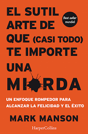
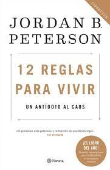
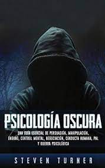

El sutil arte de que casi todo te importe un carajo es un libro muy bueno para comenzar en el mundo del crecimiento personal. Con el aprenderas a como acomodar tus propias prioridades y que la opinion del resto de la gente no te importe.
Es un libro que a simple vista quizas no parece muy llamativo y debo admitirlo, ni siquiera yo creia que valiera mucho la pena, pero despues de ver a tantas personas recomendandolo decidi darle una oportunidad y debo decir que no me decepciono.
Es un libro no muy extenso donde se comparte mucha mas informacion de la que parece y encerio te ayuda a entender porque debes dejar de preocuparte de cosas minuiosas de la vida y si darle mas atencion a lo que para ti es lo importante
Como ganar amigos e influenciar sobre las personas Escrito por Dale Carnegie y publicado por primera vez en 1936, se han vendido 15 millones de ejemplares en todo el mundo. Es un libro clásico sobre las relaciones humanas.
En el podras encontrar consejos para como relacionarte con las personas a tu alrededor y hacer que ellos te necesiten o respeten. Es uno de los libros mas conocidos en este campo y con el paso del tiempo se fue acualizando para mejorarlo aun mas.
Sin duda un libro muy recomendable de leer ademas de no ser demaciado extenso

Habitos atomicos parte de una simple pero poderosa pregunta: ¿Cómo podemos vivir mejor? Sabemos que unos buenos hábitos nos permiten mejorar significativamente nuestra vida, pero con frecuencia nos desviamos del camino: dejamos de hacer ejercicio, comemos mal, dormimos poco, despilfarramos. ¿Por qué es tan fácil caer en los malos hábitos y tan complicado seguir los buenos? James Clear nos brinda fantásticas ideas basadas en investigaciones científicas, que le permiten revelarnos cómo podemos transformar pequeños hábitos cotidianos para cambiar nuestra vida y mejorarla. Esta guía pone al descubierto las fuerzas ocultas que moldean nuestro comportamiento
PDF Habitos atomicos 12 reglas para vivir: Un antídoto al caos (2018) es un libro de autoayuda del psicólogo clínico canadiense y profesor de psicología Jordan Peterson. Proporciona consejos de vida a través de ensayos que abarcan temas como la ética, la psicología, la mitología y la religión, así como anécdotas personales.
Es un libro muy recomendable aunque en este caso si vas a tardar mas tiempo con la lectura, ya que es un libro mas extenso que el resto
Las 48 leyes del poder de Robert Greene es un libro de autoayuda basado en la vida de personajes históricos. Nos enseña cómo conseguir y mantener el poder. Hay muchas formas en las que el poder desempeña un papel en la sociedad y en nuestras vidas.
Es un libro muy interesante y si se pone en practica lo que enseña puede llegar a ser muy poderoso. Incluso fue prohibido en diversas prisiones y paises
¿Qué sucedería si un gran experto con más de treinta años de experiencia en liderazgo estuviera dispuesto a compilar todo lo que ha aprendido acerca del tema en unos cuantos principios innovadores y todo por usted? Su vida cambiaría.John C. Maxwell ha hecho eso exactamente en Las 21 leyes irrefutables del liderazgo
PDF Las 21 leyes irrefutables del liderazgo Siguiendo con los libros para relacionarse con las personas llega Psicología Oscura: Una Guía Esencial de Persuasión, Manipulación, Engaño, Control Mental, Negociación, Conducta Humana, pnl y Guerra Psicológica de Steven Turner.
En el encontraremos no solo la informacion para como manipular a las personas sino tambien para como dejar de ser manipulados y creer que nosotros tenemos el control cuando en realidad no es asi.
Es un libro muy conocido y recomendado por todas las personas que lo han leido
Para finalizar con esta lista les presento al libro Padre rico Padre pobre de Robert Kiyosaki, es un libro de finanzas de los mas conocidos donde encontraremos informacion tanto para aumentar nuestors ingresos, descubrir lo que es el emprendimiento y la diferencia de pensamientos que provocan que una persona pueda ser millonaria o no.
Evoca el concepto de libertad financiera a través de la inversión, los inmuebles, ser dueño de negocios y el uso de tácticas de protección financiera; está escrito de una forma anecdótica, orientado a crear un interés público en las finanzas.